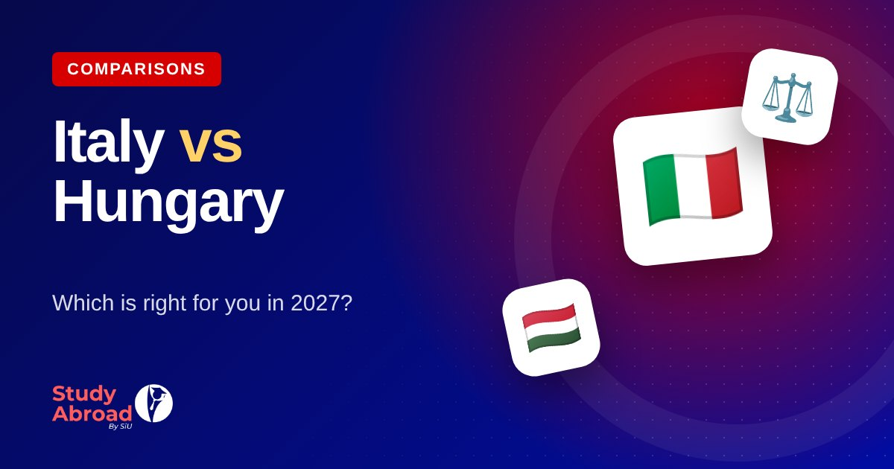

Italy Student Visa from Pakistan 2027: Universitaly, Documents & Application Steps
A practical 2027 guide for Pakistani students covering Italian university admission, Universitaly pre-enrolment, visa documents, financial evidence and Embassy procedures.

At a glance
- Admission and visa are separate stages: a university offer does not itself grant permission to travel.
- Visa-required Pakistani students normally complete university pre-enrolment through the official Universitaly portal.
- The Embassy's 2026/27 instructions are not automatically the deadline or checklist for 2027/28.
- Prepare academic, identity, language and financial evidence early, and use only official appointment channels.
Italy is an attractive destination for Pakistani students because it offers public universities, English-taught degrees and regional scholarship opportunities. But a successful application involves more than receiving an admission letter. Students must follow the university's enrolment process, complete required pre-enrolment, prepare a consistent visa file and meet the Italian Embassy's current instructions for applicants in Pakistan.
This guide explains the main steps for students planning a 2027 intake. It is an educational overview, not a promise of admission or a visa outcome. Immigration procedures and university deadlines can change from one academic year to the next.
1. Secure admission before starting the visa stage
Start by choosing a degree that matches your previous education and future plans. A bachelor's applicant should check accepted school qualifications, subject prerequisites and language requirements. A master's applicant should check whether the previous degree, subject background, credit load and grades meet the programme's entry criteria.
Prepare the documents requested by each university. These commonly include a passport, academic certificates and transcripts, a CV for some postgraduate courses, a motivation letter or statement of purpose, and evidence of English or Italian proficiency where required. Some institutions request translated, legalised or verified documents. Follow the university's own instructions rather than assuming every Italian institution uses the same checklist.
An English-taught programme may accept IELTS, another recognised test, an interview or an institutional English-medium certificate, depending on its admission policy. An MOI letter is not a universal waiver. Obtain written confirmation from the university that your evidence meets the requirement before relying on it.
2. Complete pre-enrolment through Universitaly
For non-EU students living abroad who need a study visa to enrol at an Italian university, pre-enrolment is generally submitted through the official Universitaly portal. The Italian Ministry of Foreign Affairs explains that visa-required applicants must use this process for the relevant higher-education courses.
Follow the university's instructions when creating the application. Select the correct institution and programme, enter your personal and academic information carefully, and upload the requested documents. The university reviews the submission and, where accepted, validates it in the portal. Keep copies of your application summary and all messages from the university.
Pre-enrolment is not a visa approval. It is one required part of the process. The Embassy of Italy in Islamabad has stated that only applicants whose pre-enrolment has been validated by their university are eligible to proceed to the study-visa application stage under the procedure described in its 2026/27 notice.
3. Understand the 2027/28 timeline
Do not use an old intake deadline as if it applies to the next academic year. The Embassy's notice published on 29 May 2026 covers academic year 2026/27 and set 30 November 2026 as the visa-application deadline for that cycle. That date is not a confirmed deadline for 2027/28.
As of 8 November 2026, students planning September 2027 should monitor the university's admissions calendar, the next annual procedures published by the Italian authorities and the Embassy of Italy in Islamabad. Universities may open applications at different times, and scholarship calls may have a separate timetable from admission and visa processing.
A practical preparation sequence is to shortlist programmes first, complete language and academic documents, submit university applications as soon as the relevant portal opens, then complete Universitaly pre-enrolment after following the institution's instructions. Leave time for document legalisation, translations, financial evidence and any appointment or processing steps.
4. Prepare a clear student-visa document file
The exact list depends on the type of study and the Embassy's current checklist. The Embassy's 2026 postgraduate-study checklist provides a useful example of documents postgraduate applicants may be asked to prepare. It includes:
- Completed visa application form, valid passport and required photographs.
- Proof of residence in Pakistan and a CNIC copy for Pakistani citizens.
- Universitaly pre-enrolment summary and the university admission letter.
- Qualification documents and photocopies, with apostille and Italian translation where instructed.
- CIMEA documentation where required for the applicant's case.
- IELTS or another language certificate if required by the university, or an institutional language certificate where accepted.
- Evidence of income or salary, tax records where requested, and proof of sufficient financial resources.
- Bank statements covering the previous six months, signed and stamped by the bank, and a Family Registration Certificate where required.
Important: this is a summary of a published postgraduate checklist, not a universal checklist for every bachelor's, exchange or other study application. Use the latest checklist for your specific visa category and follow instructions about apostilles, translations, originals and photocopies. The Embassy may request additional evidence.
5. Make your financial evidence understandable
Your file should show how your studies and living costs will be funded. The amount and acceptable evidence must be checked against the rules in force for your application and the official checklist. If a parent or another sponsor is paying, explain the relationship and provide the sponsor documents requested by the Embassy. A bank balance alone may not explain the source of funds or the sponsor's ability to support the student.
Keep financial records consistent. Avoid unexplained large deposits immediately before applying. Where the checklist requests bank statements for a defined period, provide the complete period rather than selected pages. If you are employed, the Embassy's postgraduate checklist also refers to salary or income evidence and tax returns in relevant cases.
Do not borrow money temporarily simply to create a bank balance or submit altered documents. False or misleading evidence can seriously damage an application. Ask the Embassy or the official visa channel if a document requirement is unclear.
6. Follow the official appointment process in Pakistan
According to the Embassy's notice of 25 July 2026, study-visa applicants must first complete pre-enrolment through Universitaly. Once the university confirms the pre-enrolment, BLS contacts the applicant to arrange the appointment under the procedure described in that notice. The Embassy has warned students not to purchase appointments from intermediaries.
A separate Embassy notice dated 4 September 2026 said the Italy visa application centres in Multan and Faisalabad would cease operations from 6 September 2026, leaving Islamabad and Lahore as the available centres under that notice. Always check the Embassy's latest update before travelling or booking. Do not assume that a centre, appointment method or jurisdiction rule from an earlier year remains unchanged.
7. After the visa decision and arrival
Wait for the formal visa decision before making non-refundable travel commitments. If the visa is granted, check the validity dates, entry conditions and any instructions attached to it. Carry your passport, admission and accommodation details, proof of funds and other important documents when travelling.
After arriving in Italy, complete the required residence-permit steps within the applicable deadline and follow the university's enrolment instructions. Ask the institution's international office which local procedures apply to your course and city. A student visa is not a guarantee of a scholarship, part-time job or future employment.
8. Common mistakes to avoid
- Assuming an admission letter automatically means a visa will be issued.
- Using an old Embassy checklist or 2026/27 deadline for a 2027/28 application.
- Submitting an MOI letter without checking whether the university accepts it.
- Providing incomplete bank statements or unclear sponsor evidence.
- Paying an unofficial agent for an appointment or believing a visa is guaranteed.
- Leaving translations, apostilles or university pre-enrolment until the last moment.
Frequently asked questions
Can Pakistani students apply for an Italy study visa for September 2027?
Is Universitaly compulsory for Pakistani students?
Does an Italian university offer guarantee a student visa?
Can I apply without IELTS?
Can I use the 30 November 2026 deadline for September 2027?
Where can I get help with my Italy application in Lahore?
Get your university shortlist and document plan reviewed before you apply.
Official sources and further reading
- Universitaly — official pre-enrolment portal
- Italian Ministry of Foreign Affairs — Study in Italy
- Embassy of Italy in Islamabad — 2026/27 procedures and deadline
- Embassy of Italy in Islamabad — study-visa appointment instructions
- Embassy of Italy — visa-centre update, September 2026
For related information, see our Study in Italy page and study-abroad guides.
This article is general educational information, not legal or immigration advice. Always follow the current Embassy checklist and university instructions. Last reviewed: 8 November 2026.